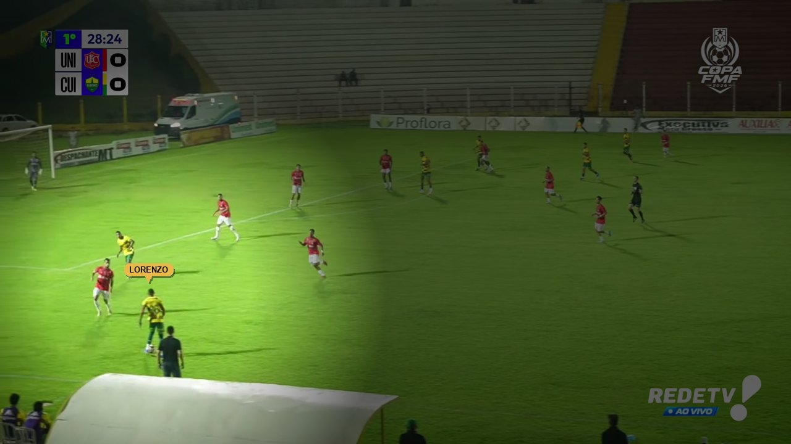
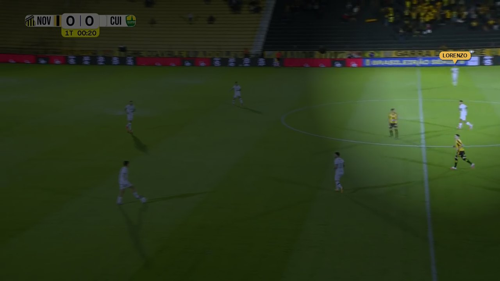
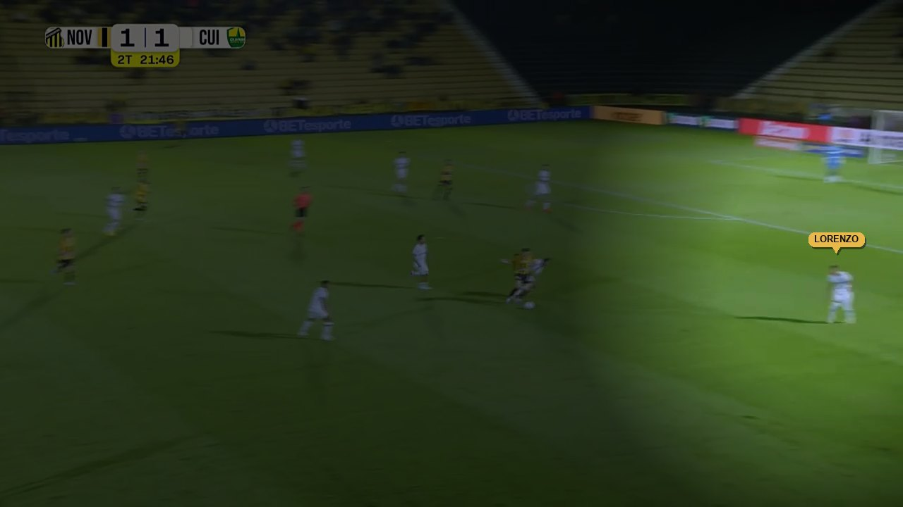
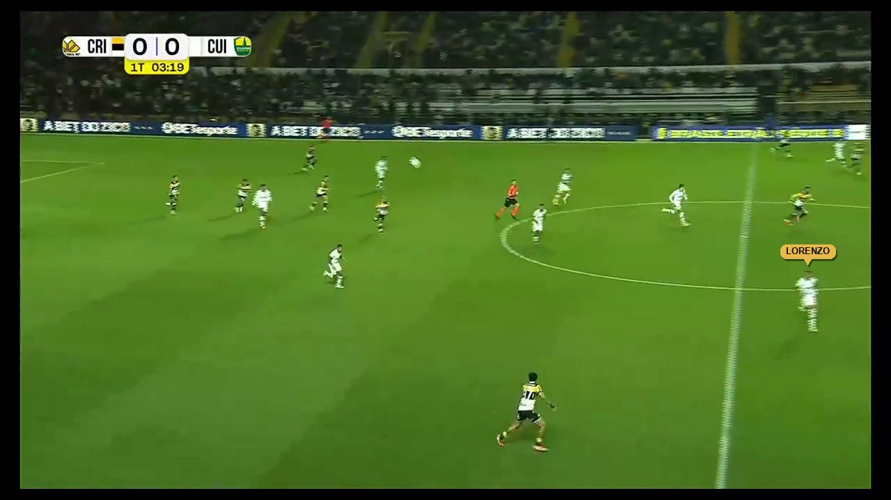
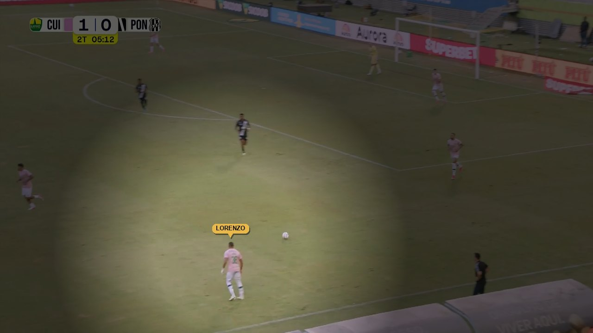
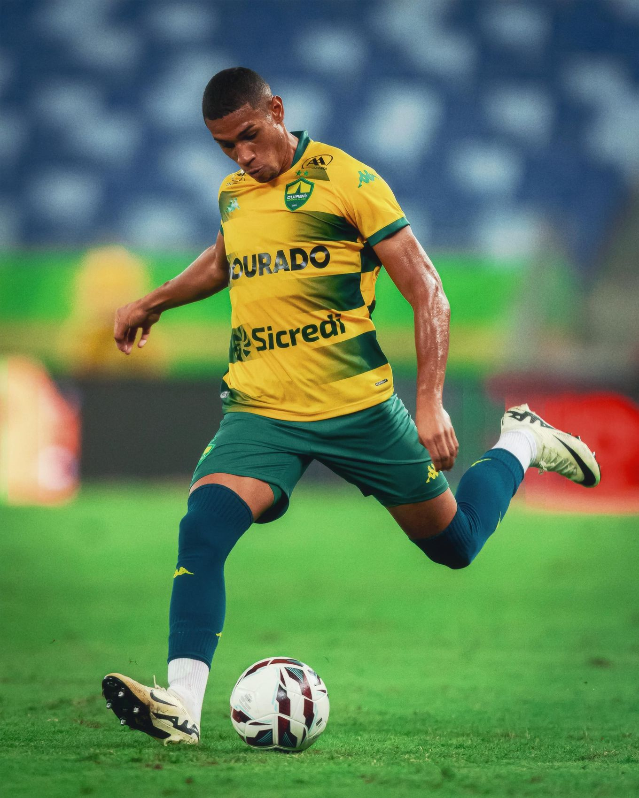

CuiabáLateral esquerdo / alaCanhoto
CuiabáLateral esquerdo / alaCanhotoLorenzo
Silva Martins
Cuiabá · camisa 36Lateral com valências no ataque e na defesa, e uma das grandes promessas do futebol brasileiro
Começou no futsal, fez quatro anos de base no Novo Hamburgo e passou por Palmeiras e Goiás no Sub-17 antes do Cuiabá, em 2024. Campeão mato-grossense na base.
Estreou em janeiro de 2026 e é titular da Série B desde 9 de agosto.
Convocado para a Seleção Sub-20 em 30/10/2026. Na idade da Seleção Olímpica de 2028 (sub-23, nascidos a partir de 2005).
Canhoto que joga com as duas pernas: cruza, passa e finaliza também com a direita. Desde a 20ª rodada, tem mais dribles certos que qualquer um dos 58 laterais da Série B e é o 2º em desarmes certos (empatado): ataca pelo drible e pela condução, e desarma com eficiência.
Do futsal à lateral titular do Cuiabá

Começou no futsal e fez quatro anos de categorias de base.

Sub-17. Integrou o elenco campeão do Campeonato Brasileiro Sub-17 (2023).

Sub-17.
Sub-17 e Sub-20. Campeão mato-grossense Sub-17 (2024) e Sub-20 (2024 e 2025); em 2026, integrou também o elenco campeão do Sub-20.
Estreia no time principal em 24/01, na Série B desde 21/03 e titular desde 09/08. Os três gols como profissional vieram desde a 20ª rodada: 08/09 e 21/09 na Série B e 29/10 na Copa FMF.
91% das ações pela esquerda, nos três terços do campo
Perfil híbrido: entre o lateral ofensivo e o de um contra um
O lateral que ataca por fora e serve a área: volume e acerto de cruzamento, passe que vira finalização e presença na área adversária.
O lateral que resolve pelo drible: passa pelo marcador, conduz para a frente e ganha metros sozinho. Chega ao fundo pelo pé, não pelo cruzamento de primeira.
O ala de linha de cinco: percorre o corredor inteiro nos dois sentidos, com piso alto de trabalho defensivo e de chegada ao ataque.
Desde a 20ª rodada, é quem mais joga no Cuiabá
 1–1
1–1 1–1
1–1 3–1
3–1 1–01–1
1–01–1 2–1
2–1 0–2
0–2 3–0
3–0 1–1
1–1 3–0
3–0 0–3
0–3 2–0
2–0 0–0
0–0 0–1
0–1 0–1
0–1 0–1
0–1Entre os 58 laterais, só ele está entre os três primeiros nos dois
Seis números entre os 7 primeiros dos 58 laterais
Forte no ataque; na defesa, pontos a evoluir
Os lances, por tipo, com a narração da transmissão





Referências de estilo, não de nível
Canhoto que vive da condução e do drible em velocidade pelo corredor esquerdo e defende com agressividade no duelo.
No que se parece: a condução e o drible como arma principal, com atitude no desarme. Lorenzo é o 1º em dribles e o 3º em conduções entre os laterais da Série B.
Canhoto que ganha metros conduzindo a bola em velocidade e fecha o espaço de volta com recuperação rápida.
No que se parece: a progressão pela condução. Lorenzo soma 135 conduções progressivas, o 3º maior total entre os laterais.
Canhoto de drible curto, que resolve o um contra um em espaço pequeno e ataca o corredor e por dentro.
No que se parece: o drible curto, no corredor e por dentro. Por 90 minutos, Lorenzo é o 2º em dribles certos entre os 58 laterais.
Canhoto de força, que conduz, ataca o corredor e disputa o duelo com o corpo.
No que se parece: atacar e desarmar no mesmo corredor. Lorenzo é o 1º em dribles e o 2º em desarmes certos (empatado).
Perdas de posse, interceptações e jogo aéreo
Desarma mais no confronto do que na leitura: é o 2º em desarmes certos (31), com 84% de acerto no desarme.

O que entrega hoje e para quem encaixa
em linha de três
em linha de quatro

Fale com a 4ComM
De onde vem cada número
COMPARATIVOOpta (Stats Perform), a estatística de cada jogo somada. Universo: laterais da Série B 2026, esquerdos e direitos, com 450+ minutos desde a 20ª rodada (27/07/2026) e 30%+ dos minutos de titular na lateral; o ala em linha de três, que a Opta rotula meio-campista pela esquerda ou pela direita, conta como lateral. 58 laterais, 161 jogos da Opta até 30/10/2026.
TOTAIS E POR 90Os rankings usam totais, que refletem os minutos jogados (Lorenzo tem 1.316 de 1.440 possíveis, 91%); a tela “Como ele joga” usa valores por 90 minutos ou taxas, sempre como a parcela dos 58 laterais que ele iguala ou supera. A idade dos jogadores é a de 30/10/2026, pelo nascimento do elenco da Opta. Sub-23: nascidos a partir de 1/1/2005.
ARQUÉTIPORégua completa do catálogo da 4ComM sobre dados Opta: 11 famílias de métricas, cada uma pela média ponderada dos percentis dos seus componentes (por 90 minutos ou em taxa) entre os 58 laterais; o nome de um perfil só vale se a condição principal for atingida. A família ‘Defesa’ das assinaturas do lateral defensivo e do ala, de goleiro no catálogo, é lida como trabalho defensivo.
MAPAS E LANCESOpta, eventos com coordenada dos 19 jogos da Série B 2026 em que atuou, sem suavização (o gol de 08/09 entra no mapa como finalização, pela súmula); vídeos da transmissão, com a narração original.
GOLSO gol de 08/09/2026 (Cuiabá 3 x 0 Athletic-MG, 2º tempo, aos 17 minutos) é creditado ao Lorenzo pela súmula e pelo ge; a Opta o registra como gol contra. O documento usa a súmula nos gols (2 na Série B, 3 como profissional); rankings e gráficos seguem a Opta.
DADOS GERAISJogos, minutos, gols e assistências de 2026 (base e profissional, Copa FMF) e títulos: oGol (31/10/2026). Trajetória: Instagram do atleta (despedida do Novo Hamburgo, 31/12/2022), ge Mato Grosso (24/09 e 30/10/2026) e oGol. Estilo parecido: leitura qualitativa da 4ComM.
SELEÇÃO E FOTOSConvocação: CBF (lista de 30/10/2026). Olimpíadas 2028: idade sub-23, nascidos a partir de 1/1/2005 (regulamento da FIFA do torneio olímpico de futebol). Fotos: Instagram do atleta e divulgação do Cuiabá.
CuiabáLateral esquerdo / alaEsquerdinoLorenzo
Silva Martins
Cuiabá · camisola 36Lateral com valências no ataque e na defesa, e uma das grandes promessas do futebol brasileiro
Começou no futsal, fez quatro anos de base no Novo Hamburgo e passou por Palmeiras e Goiás no Sub-17 antes do Cuiabá, em 2024. Campeão mato-grossense na base.
Estreou em janeiro de 2026 e é titular da Série B desde 9 de agosto.
Convocado para a Seleção Sub-20 em 30/10/2026. Na idade da Seleção Olímpica de 2028 (sub-23, nascidos a partir de 2005).
Esquerdino que joga com os dois pés: cruza, passa e remata também com a direita. Desde a 20.ª jornada, tem mais dribles certos que qualquer um dos 58 laterais da Série B e é o 2.º em desarmes certos (empatado): ataca pelo drible e pela condução, e desarma com eficiência.
Do futsal à lateral titular do Cuiabá
Começou no futsal e fez quatro anos de categorias de base.
Sub-17. Integrou o plantel campeão do Campeonato Brasileiro Sub-17 (2023).
Sub-17.
Sub-17 e Sub-20. Campeão mato-grossense Sub-17 (2024) e Sub-20 (2024 e 2025); em 2026, integrou também o plantel campeão do Sub-20.
Estreia na equipa principal em 24/01, na Série B desde 21/03 e titular desde 09/08. Os três golos como profissional vieram desde a 20.ª jornada: 08/09 e 21/09 na Série B e 29/10 na Copa FMF.
91% das ações pela esquerda, nos três terços do campo
Perfil híbrido: entre o lateral ofensivo e o de um contra um
O lateral que ataca por fora e serve a área: volume e acerto de cruzamento, passe que vira remate e presença na área adversária.
O lateral que resolve pelo drible: passa pelo marcador, conduz para a frente e ganha metros sozinho. Chega ao fundo pelo pé, não pelo cruzamento de primeira.
O ala de linha de cinco: percorre o corredor inteiro nos dois sentidos, com piso alto de trabalho defensivo e de chegada ao ataque.
Desde a 20.ª jornada, é quem mais joga no Cuiabá
1–11–13–11–01–12–10–23–01–13–00–32–00–00–10–10–1Entre os 58 laterais, só ele está entre os três primeiros nos dois
Seis números entre os 7 primeiros dos 58 laterais
Forte no ataque; na defesa, pontos a evoluir
Os lances, por tipo, com a narração da transmissão
Referências de estilo, não de nível
Esquerdino que vive da condução e do drible em velocidade pelo corredor esquerdo e defende com agressividade no duelo.
O que têm em comum: a condução e o drible como arma principal, com atitude no desarme. Lorenzo é o 1.º em dribles e o 3.º em conduções entre os laterais da Série B.
Esquerdino que ganha metros a conduzir a bola em velocidade e fecha o espaço de volta com recuperação rápida.
O que têm em comum: a progressão pela condução. Lorenzo soma 135 conduções progressivas, o 3.º maior total entre os laterais.
Esquerdino de drible curto, que resolve o um contra um em espaço pequeno e ataca o corredor e por dentro.
O que têm em comum: o drible curto, no corredor e por dentro. Por 90 minutos, Lorenzo é o 2.º em dribles certos entre os 58 laterais.
Esquerdino de força, que conduz, ataca o corredor e disputa o duelo com o corpo.
O que têm em comum: atacar e desarmar no mesmo corredor. Lorenzo é o 1.º em dribles e o 2.º em desarmes certos (empatado).
Perdas de posse, interceções e jogo aéreo
Desarma mais no confronto do que na leitura: é o 2.º em desarmes certos (31), com 84% de acerto no desarme.
O que entrega hoje e para quem encaixa
em linha de três
em linha de quatro
Fale com a 4ComM
De onde vem cada número
COMPARATIVOOpta (Stats Perform), a estatística de cada jogo somada. Universo: laterais da Série B 2026, esquerdos e direitos, com 450+ minutos desde a 20.ª jornada (27/07/2026) e 30%+ dos minutos de titular na lateral; o ala em linha de três, que a Opta rotula médio pela esquerda ou pela direita, conta como lateral. 58 laterais, 161 jogos da Opta até 30/10/2026.
TOTAIS E POR 90Os rankings usam totais, que refletem os minutos jogados (Lorenzo tem 1.316 de 1.440 possíveis, 91%); a página “Como ele joga” usa valores por 90 minutos ou taxas, sempre como a parcela dos 58 laterais que ele iguala ou supera. A idade dos jogadores é a de 30/10/2026, pelo nascimento do plantel da Opta. Sub-23: nascidos a partir de 1/1/2005.
ARQUÉTIPORégua completa do catálogo da 4ComM sobre dados Opta: 11 famílias de métricas, cada uma pela média ponderada dos percentis dos seus componentes (por 90 minutos ou em taxa) entre os 58 laterais; o nome de um perfil só vale se a condição principal for atingida. A família ‘Defesa’ das assinaturas do lateral defensivo e do ala, de guarda-redes no catálogo, é lida como trabalho defensivo.
MAPAS E LANCESOpta, eventos com coordenada dos 19 jogos da Série B 2026 em que atuou, sem suavização (o golo de 08/09 entra no mapa como remate, pela ficha de jogo); vídeos da transmissão, com a narração original.
GOLOSO golo de 08/09/2026 (Cuiabá 3 x 0 Athletic-MG, 2.ª parte, aos 17 minutos) é creditado ao Lorenzo pela ficha de jogo e pelo ge; a Opta regista-o como autogolo. O documento usa a ficha de jogo nos golos (2 na Série B, 3 como profissional); rankings e gráficos seguem a Opta.
DADOS GERAISJogos, minutos, golos e assistências de 2026 (base e profissional, Copa FMF) e títulos: oGol (31/10/2026). Trajetória: Instagram do atleta (despedida do Novo Hamburgo, 31/12/2022), ge Mato Grosso (24/09 e 30/10/2026) e oGol. Estilo parecido: leitura qualitativa da 4ComM.
SELEÇÃO E FOTOSConvocação: CBF (lista de 30/10/2026). Jogos Olímpicos de 2028: idade sub-23, nascidos a partir de 1/1/2005 (regulamento da FIFA do torneio olímpico de futebol). Fotos: Instagram do atleta e imagens cedidas pelo Cuiabá.
CuiabáLeft-back / wing-backLeft-footedLorenzo
Silva Martins
Cuiabá · shirt 36A full-back with qualities in attack and defence, and one of the great prospects of Brazilian football
Started in futsal, spent four years in the Novo Hamburgo academy and played for Palmeiras and Goiás at Under-17 level before joining Cuiabá in 2024. Mato Grosso champion at youth level.
Debuted in January 2026 and has been a Série B starter since 9 August.
Called up to Brazil's Under-20s on 30 Oct 2026. The right age for the 2028 Olympic team (under-23, born in 2005 or later).
Left-footed and two-footed: he crosses, passes and shoots with his right as well. Since round 20, he has more successful dribbles than any of the 58 Série B full-backs and is joint 2nd for tackles won: he attacks with the dribble and the carry, and tackles efficiently.
From futsal to Cuiabá's starting full-back
Started in futsal and spent four years in the academy.
Under-17s. Part of the squad that won the 2023 Brazilian U-17 Championship.
Under-17s.
Under-17s and Under-20s. Mato Grosso U-17 champion (2024) and U-20 champion (2024 and 2025); also in the 2026 U-20 title-winning squad.
First-team debut on 24 Jan, Série B since 21 Mar, starter since 9 Aug. All three first-team goals came after round 20: 8 and 21 Sep in the Série B, 29 Oct in the Copa FMF.
91% of his actions on the left, across all three thirds of the pitch
A hybrid profile: between the attacking and the one-on-one full-back
The full-back who attacks down the outside and serves the box: crossing volume and accuracy, passes that lead to shots and presence in the opposition box.
The full-back who settles things with the dribble: he beats his marker, carries forward and gains ground on his own, reaching the byline on the ball rather than with a first-time cross.
The wing-back in a back five: covers the whole flank in both directions, with a high baseline of defensive work and of arrivals in attack.
Since round 20, he plays more than anyone at Cuiabá
1–11–13–11–01–12–10–23–01–13–00–32–00–00–10–10–1Among the 58 full-backs, only he is in the top three for both
Six numbers in the top 7 of the 58 full-backs
Strong in attack; room to improve in defence
The plays, by type, with the broadcast commentary
References for style, not level
A left-footer who lives on carrying and dribbling at pace down the left and defends aggressively in the duel.
What matches: carrying and dribbling as the main weapon, with attitude in the tackle. Lorenzo is 1st for dribbles and 3rd for carries among Série B full-backs.
A left-footer who gains ground carrying the ball at pace and closes the space back with quick recovery.
What matches: progression by carrying the ball. Lorenzo has 135 progressive carries, the 3rd-highest total among full-backs.
A left-footer with a close dribble, who settles the one-on-one in small spaces and attacks down the flank and inside.
What matches: the close dribble, on the flank and inside. Per 90 minutes, Lorenzo is 2nd for successful dribbles among the 58 full-backs.
A powerful left-footer who carries, attacks the flank and competes in the duel with his body.
What matches: attacking and tackling on the same flank. Lorenzo is 1st for dribbles and joint 2nd for tackles won.
Possessions lost, interceptions and aerial play
He wins the ball more in the duel than by reading the play: he is 2nd for tackles won (31), with an 84% tackle success rate.
What he delivers today and where he fits
in a back three
in a back four
Talk to 4ComM
Where the numbers come from
COMPARISONOpta (Stats Perform), each game's statistics added up. Universe: Série B 2026 full-backs, left and right, with 450+ minutes since round 20 (27 Jul 2026) and 30%+ of their minutes as a starter at full-back; the wing-back in a back three, whom Opta labels a left or right midfielder, counts as a full-back. 58 full-backs, 161 Opta games up to 30 Oct 2026.
TOTALS AND PER 90The rankings use totals, which reflect minutes played (Lorenzo has 1,316 of 1,440 possible, 91%); the “How he plays” page uses per-90 values or rates, always as the share of the 58 full-backs he equals or beats. Players' ages are as of 30 Oct 2026, from Opta's squad birth dates. U-23: born on or after 1 Jan 2005.
ARCHETYPEThe full 4ComM catalogue on Opta data: 11 families of metrics, each the weighted average of its components' percentiles (per 90 minutes or as a rate) among the 58 full-backs; a profile's label only applies if its main condition is met. The ‘Defending’ family in the defensive full-back and wing-back signatures, a goalkeeper family in the catalogue, is read as defensive work.
MAPS AND PLAYSOpta, events with coordinates from the 19 Série B 2026 games he played, unsmoothed (the 8 Sep goal goes into the map as a shot, per the match report); broadcast videos, with the original commentary.
GOALSThe goal on 8 Sep 2026 (Cuiabá 3-0 Athletic-MG, second half, 17th minute) is credited to Lorenzo by the official match report and by ge; Opta records it as an own goal. The document follows the match report for goals (2 in the Série B, 3 for the first team); rankings and charts follow Opta.
GENERAL DATA2026 games, minutes, goals and assists (academy and first team, Copa FMF) and titles: oGol (31 Oct 2026). Career path: the player's Instagram (farewell to Novo Hamburgo, 31 Dec 2022), ge Mato Grosso (24 Sep and 30 Oct 2026) and oGol. Similar style: 4ComM's qualitative reading.
NATIONAL TEAM AND PHOTOSCall-up: CBF (squad list of 30 Oct 2026). 2028 Olympics: under-23 age, born on or after 1 Jan 2005 (FIFA regulations for the Olympic football tournament). Photos: the player's Instagram and Cuiabá handouts.
CuiabáLateral izquierdo / carrileroZurdoLorenzo
Silva Martins
Cuiabá · dorsal 36Lateral con virtudes en ataque y en defensa, y una de las grandes promesas del fútbol brasileño
Empezó en el fútbol sala, pasó cuatro años en la cantera del Novo Hamburgo y jugó en el Sub-17 de Palmeiras y Goiás antes de llegar al Cuiabá, en 2024. Campeón de Mato Grosso en categorías inferiores.
Debutó en enero de 2026 y es titular en la Série B desde el 9 de agosto.
Convocado con la Selección Sub-20 el 30/10/2026. En edad de la Selección Olímpica de 2028 (sub-23, nacidos a partir de 2005).
Zurdo que juega con las dos piernas: centra, pasa y remata también con la derecha. Desde la jornada 20, tiene más regates completados que cualquiera de los 58 laterales de la Série B y es el 2.º en entradas ganadas (empatado): ataca con el regate y la conducción, y roba con eficacia.
Del fútbol sala a lateral titular del Cuiabá
Empezó en el fútbol sala; cuatro años de cantera.
Sub-17. En la plantilla campeona del Campeonato Brasileño Sub-17 (2023).
Sub-17.
Sub-17 y Sub-20. Campeón de Mato Grosso Sub-17 (2024) y Sub-20 (2024 y 2025); en 2026, también en la plantilla campeona Sub-20.
Debut en el primer equipo el 24/01, en la Série B desde el 21/03 y titular desde el 09/08. Sus tres goles como profesional, desde la jornada 20: 08/09 y 21/09 en la Série B y 29/10 en la Copa FMF.
91% de las acciones por la izquierda, en los tres tercios
Perfil híbrido: entre el lateral ofensivo y el de uno contra uno
El lateral que ataca por fuera y sirve el área: volumen y acierto en el centro, pases que terminan en remate y presencia en el área rival.
El lateral que resuelve con el regate: supera a su marcador, conduce hacia delante y gana metros solo. Llega al fondo con el balón en los pies, no con el centro de primeras.
El carrilero de línea de cinco: recorre toda la banda en los dos sentidos, con un piso alto de trabajo defensivo y de llegada al ataque.
Desde la jornada 20, es quien más juega en el Cuiabá
1–11–13–11–01–12–10–23–01–13–00–32–00–00–10–10–1De los 58 laterales, solo él está entre los tres primeros en ambos
Seis números entre los 7 primeros de los 58 laterales
Fuerte en ataque; en defensa, margen de mejora
Las jugadas, por tipo, con la narración de la transmisión
Referencias de estilo, no de nivel
Zurdo que vive de la conducción y el regate a velocidad por la banda izquierda y defiende con agresividad en el duelo.
En qué se parece: la conducción y el regate como arma principal, con actitud en la entrada. Lorenzo es el 1.º en regates y el 3.º en conducciones entre los laterales de la Série B.
Zurdo que gana metros conduciendo el balón a velocidad y cierra el espacio de vuelta con recuperación rápida.
En qué se parece: la progresión con la conducción. Lorenzo suma 135 conducciones progresivas, el 3.º mayor total entre los laterales.
Zurdo de regate corto, que resuelve el uno contra uno en espacios pequeños y ataca por la banda y por dentro.
En qué se parece: el regate corto, por la banda y por dentro. Por 90 minutos, Lorenzo es el 2.º en regates completados entre los 58 laterales.
Zurdo potente, que conduce, ataca la banda y compite en el duelo con el cuerpo.
En qué se parece: atacar y robar en la misma banda. Lorenzo es el 1.º en regates y el 2.º en entradas ganadas (empatado).
Pérdidas de balón, intercepciones y juego aéreo
Roba más en el duelo que en la lectura: es el 2.º en entradas ganadas (31), con un 84% de acierto en la entrada.
Lo que ofrece hoy y para quién encaja
en línea de tres
en línea de cuatro
Habla con 4ComM
De dónde sale cada número
COMPARATIVOOpta (Stats Perform), la estadística de cada partido sumada. Universo: laterales de la Série B 2026, izquierdos y derechos, con 450+ minutos desde la jornada 20 (27/07/2026) y 30%+ de los minutos como titular en el lateral; el carrilero en línea de tres, que Opta etiqueta como centrocampista por la izquierda o por la derecha, cuenta como lateral. 58 laterales, 161 partidos de Opta hasta el 30/10/2026.
TOTALES Y POR 90Los rankings usan totales, que reflejan los minutos jugados (Lorenzo tiene 1.316 de 1.440 posibles, 91%); la pantalla “Cómo juega” usa valores por 90 minutos o tasas, siempre como la proporción de los 58 laterales a los que iguala o supera. La edad de los jugadores es la del 30/10/2026, según el nacimiento en la plantilla de Opta. Sub-23: nacidos a partir del 1/1/2005.
ARQUETIPORegla completa del catálogo de 4ComM sobre datos Opta: 11 familias de métricas, cada una por la media ponderada de los percentiles de sus componentes (por 90 minutos o en tasa) entre los 58 laterales; el nombre de un perfil solo vale si se cumple la condición principal. La familia ‘Defensa’ de las firmas del lateral defensivo y del carrilero, de portero en el catálogo, se lee como trabajo defensivo.
MAPAS Y JUGADASOpta, eventos con coordenadas de los 19 partidos de la Série B 2026 que jugó, sin suavizado (el gol del 08/09 entra en el mapa como remate, según el acta); vídeos de la transmisión, con la narración original.
GOLESEl gol del 08/09/2026 (Cuiabá 3-0 Athletic-MG, segundo tiempo, minuto 17) se acredita a Lorenzo en el acta y en ge; Opta lo registra como gol en propia puerta. El documento sigue el acta en los goles (2 en la Série B, 3 como profesional); los rankings y los gráficos siguen a Opta.
DATOS GENERALESPartidos, minutos, goles y asistencias de 2026 (cantera y profesional, Copa FMF) y títulos: oGol (31/10/2026). Trayectoria: Instagram del jugador (despedida del Novo Hamburgo, 31/12/2022), ge Mato Grosso (24/09 y 30/10/2026) y oGol. Estilo parecido: lectura cualitativa de 4ComM.
SELECCIÓN Y FOTOSConvocatoria: CBF (lista del 30/10/2026). Juegos Olímpicos 2028: edad sub-23, nacidos a partir del 1/1/2005 (reglamento de la FIFA del torneo olímpico de fútbol). Fotos: Instagram del jugador y difusión del Cuiabá.